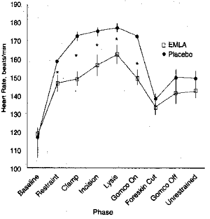
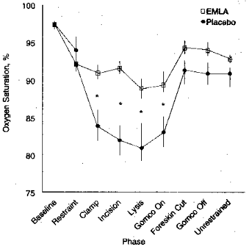
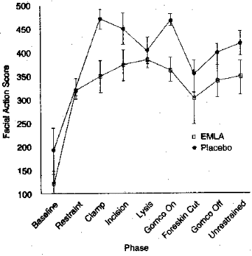
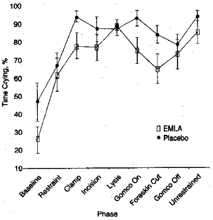

THE CIRCUMCISION REFERENCE LIBRARY
Franca Benini, MD; Celeste Johnson, RN,
DEd;
Daniel Faucher, MD, FRCPC; J. V. Aranda, MD, PhD, FRCPC
Objective
To determine the efficacy of topical anesthetic cream,
eutectic mixture of local anesthetics (EMLA), in alleviating
pain from neonatal circumcision.
Design
Randomized, controlled trial.
Setting
Normal newborn nursery in a university teaching
hospital.
Patients
Twenty-seven newborn, full-term male neonates, aged 1 to 3
days.
Outcome measures
Heart rate, transcutaneous oxygen saturation, facial
activity and crying.
Results
Compared with baseline, all newborns experienced pain as
evidenced by increased heart rate of an average of 40 beats
per minute (F[8, 25]=14.12; P<.0001) decreased
oxygen saturation of 3% (F[8, 25]=15.02; P<.0001),
and more facial actions indicative of pain (F[8, 25]=5.25;
P<.002) during all phases of the procedure.
Compared with placebo, EMLA significantly attenuated the pain
response as shown by lower heart rate of an average of 25
beats per minute (F[1, 25]=14.92; P<.001), higher
oxygen saturation of 5%, particularly during the clamping and
lysis phases (F [1, 25]=19.83; P<.0001), 20% less
facial activity (F[1, 25]=12.01; P<.002), and 15%
less crying during the clamping, Gomco clamp application, and
incision of the foreskin. There were no differences between
groups in the spectral crying parameters.
Conclusions
Circumcision procedure produces pain responses that EMLA
diminishes. Thus, EMLA may be a useful agent for pain
management in neonatal circumcision.
(JAMA. 1993;270:850-853)
Circumcision on male neonates without benefit of anesthesia or analgesia is common practice1. Disregard of pain experienced by infants during this procedure almost never occurs in older children or adults. The belief that pain is not experienced in the same way by infants, or that it is inconsequential, continues to pervade pediatric practice despite data that infants do experience pain with at least short-term significant sequelae. Some of the most compelling data reflect a stress response to more intense pain that affects physiological stability2, morbidity3, and behavior4, 5.
Local anesthetics have been used for the circumcision procedure. Several reports of dorsal penile nerve block with lidocaine have indicated that they are effective in decreasing crying, diminishing heart rate increases and oxygen saturation decreases 6, 7, and diminishing the increases in serum cortisol levels8. One study 9 did not find a difference in serum cortisol levels between infants who had received the penile block and those who had not. In a randomized double-blind study10, newborns who received a mixture of topical 4% lidocaine mixed with acid mantle cream 2 hours prior to circumcision, experienced lower heart rates and less crying than those newborns who did not receive the lidocaine mixture. Respiratory rate and oxygen saturation were not affected. This was perhaps because the lidocaine suspension did not reach all the tissue involved in the procedure. In another double-blind randomized study11 with 24 newborns, application of lidocaine during anesthetized surgery decreased the need for postprocedure analgesia.
Although local anesthesia appears to be the most effective means of controlling pain from circumcision procedure, there remains the pain of administering the lidocaine by injection, as well as the risk of the agent entering the blood system if it is injected into vessels accidentally. A topical anesthetic agent that would reach the effected tissue would be ideal. Eutectic mixture of local anesthetics (EMLA) is a 1:1 oil/water emulsion of a eutectic mixture of lidocaine and prilocaine hydrochloride bases. Ranges of 78% to 82% total dermal analgesia with doses of 0.5 to 2.0 mL of 5% EMLA have been achieved after 60 minutes under an occlusive dressing in adults, lasting for at least 2 hours12. No studies of rate of absorption or percentage of total analgesia achieved have been conducted on infants, although EMLA has been used in infants in Europe for heelstick13.
This study was designed to test the efficacy of topical anesthetic EMLA in diminishing the pain from circumcision in the newborn male infant. Although we believe that unanesthetized circumcision may be harmful for newborns, we used a control placebo group, as the current practice at our institution is not to give anesthesia or analgesia for the procedure.
Twenty-eight newborn males were enrolled into the study after informed consent was obtained from the parents. The criteria for inclusion in the study were gestational age between 37 and 42 weeks, product of uncomplicated vaginal or cesarean section delivery, 5-minute Apgar score of 7 or more, birth weight greater than 2500 g, postnatal age less than 7 days of life, procedure performed between 8 AM and 2 PM, and parental request for circumcision. The sample size was estimated from previous studies on infant pain6, 7, 10 and was based on heart rate difference of 30 beats per minute with an SD of 30 beats per minute. Using Colton's formula14 and setting an <alpha> of .05 and a <beta> of .90, 13 newborns per group were needed. These newborns were randomly assigned to the EMLA or placebo group.
Before the scheduled time of the circumcision, the cream (.05 mL), either EMLA or sterile petroleum jelly, was applied with a cotton-tipped swab on the outside of the prepuce and covered with an occlusive gauze dressing that was taped to itself. The newborn was then swaddled and left in a crib for the next 45 to 60 minutes.
The newborn was then unswaddled and connected to a pulse oximeter. The dressing was removed for a 10-minute baseline measurement. The newborn was then placed in a supine position on a circumcision board (CIRCUMSTRAINT, Olympic Surgical Co, Seattle, Wash) with arms and legs restrained just below the shoulders and at the groin with canvas straps for the procedure. The procedure was conducted by one of three attending pediatricians in the nursery. The following phases comprised the procedure: baseline, restraint, clamping the dorsal side of the foreskin, longitudinal incision of the foreskin, lysis of adhesions between the foreskin and the glans, application of Gomco clamp (Gomco Inc, St Louis, Mo), cutting of the foreskin, removal of the Gomco, and removal of the restraints.
Heart rate and transcutaneous oxygen saturation were measured second to second by the Nellcor pulse oximeter (Nellcor Inc, Hayward, Calif) placed on the newborn's foot. The mean value for each phase was used for comparisons between groups.
Facial expression was recorded during all phases of the procedure on a video camera. The tapes were then coded in the laboratory by assistants who were blinded to the design of the study. Coding was conducted according to the Neonatal Facial-Action Coding System developed by Grunau and Craig15. Coding was done on a second-to-second basis using a stop-frame playback system. The 10 facial actions were scored, but only those seven that had previously been associated with pain response were entered into analysis. These included brow bulge, eye squeeze, nasolabial furrow, open lips, vertical mouth stretch, horizontal mouth stretch, and taut tongue. Interrater reliability between the coders was <kappa> of at least 0.7 on all categories. For purposes of analyses, a total facial action score computed by summing the seven categories was used.
Crying was recorded into an audio recorder via a microphone. Percentage of time crying was calculated for each phase. The first cry in each phase was digitalized by Fast Fourier Transform using the CSPEECH16 software program. Spectral features of crying were analyzed, including maximum fundamental frequency, relative spectral energy, and harmonic structure (dysphonia percentage). These features reflect a tensing of the vocal tract and have been associated with pain in infants17, which is consistent with a stress-arousal model of pain response proposed by Anand18, 19 and Lester20. The duration of crying was measured as percentage of time crying in each phase.
Analysis was conducted using the SPSS for personal computer package. Repeated measures analysis of variance was conducted using the multivariate analysis of variance (MANOVA) program and contrasting baseline values with each of the other eight phases in turn. Mean values for heart rate, oxygen saturation, total facial action, and duration of crying were analyzed separately. Repeated measures MANOVA was used for the three spectral cry features, and both multivariate and univariate effects were examined.
Twenty-eight newborns who met the selection criteria were enrolled. There were no refusals for consent to participate. One newborn for whom data were collected was subsequently excluded as the gestational age was later ascertained to be below the cutoff. The sample characteristics were similar for each group. The mean birth weight for the EMLA group was 3690 kg and 3527 kg for the placebo group, the mean gestational age was 39.3 weeks for the EMLA group and 39.2 weeks for the placebo group, mean ages were 2.5 days for the EMLA group and 2.8 days for the placebo, and mean Apgar score at 5 minutes was 9.18 for the EMLA group and 9.25 for the placebo group.
Overall, newborns in the placebo group showed a greater response to the procedure than the EMLA group. Group means for each phase can be seen in Figs 1 through 4.
Heart rate (Fig 1) was significantly different between groups (F [1, 25]=14.92; P<.001), between phases (F [8, 25]=14.12; P<.001), and between groups across phases (F [8, 25]=5.436; P<.002). The magnitude of the differences between groups was 15 to 20 beats per minute and between phases was 25 to 55 beats per minute. The points at which heart rates were significantly higher from baseline for the placebo group vs the EMLA group were at clamping (F [1, 25]=11.37; P<.003) and application of the Gomco (F [1, 25]=8.78; P<.007). Heart rate for both groups was significantly higher from baseline in all phases except the cutting of the foreskin (F [8, 25]=.086; P=.772).
|  | Fig 1 - The effect of circumcision and eutectic mixture of local anesthetics (EMLA) on heart rate (beats/min). Asterisk indicates P<.01. Some of the group means overlap and are listed as follows: baseline, 117 for EMLA and 114 for placebo; foreskin cut, 133 for EMLA and 138 for placebo; Gomco clamp off, 141 for EMLA and 151 for placebo; and unrestrained, 143 for EMLA and 150 for placebo. |
Oxygen saturation (Fig 2) was significantly different between groups (F [1, 25]=10.39; P<.004), across phases (F [8, 25]=15.02; P<.001), and between groups across phases (F [8, 25]=3.57; P<.01). The magnitude of the mean differences between groups and phases was 2% and 28%. The points at which the placebo group had oxygen saturation values significantly lower from baseline than the EMLA group was at the longitudinal incision of the foreskin (F [1, 25]=19.83; P<.001), the lysis between the foreskin and glans (F [1, 25]=7.09; P<.01), and the application of the Gomco (F [1, 25]=4.21; P<.05). As in heart rate values, both groups had significant decreases in oxygen saturation across all phases from baseline, except for the cutting of the foreskin (F [8, 25]=1.62; P=.22).
|  | Fig 2 - The effect of circumcision and eutectic mixture of local anesthetics (EMLA) on oxygen saturation. Asterisk indicates P<.001. Some of the group means overlap and are listed as follows: baseline, 97% for EMLA and placebo; and restraint, 92% for EMLA and 94% for placebo. |
Facial action (Fig 3) was significantly different between groups (F [1, 25]= 12.01; P<.002) and between phases (F [8, 25]=5.25; P<.002) but not between groups across phases. The magnitude of difference between groups was 2% to 20% and between phases was 60% to 80%. The group differences showed more facial actions indicative of pain in the placebo group overall but not at any particular phase.
|  | Fig 3 - The effect of circumcision and eutectic mixture of local anesthetics (EMLA) on total facial action. Some of the group means overlap and are listed as follows: restraint, 327 for EMLA and 329 for placebo; lysis, 389 for EMLA and 401 for placebo; foreskin cut, 305 for EMLA and 374 for placebo; and Gomco clamp off, 331 for EMLA and 416 for placebo. |
Cry duration (Fig 4) was significantly different between groups (F [1, 25]=8.88; P<.006) and between phases (F [8, 25]=7.29; P<.001) but not between groups across phases. The magnitude of the group differences was 2% to 20% and between phases was 50% to 70%. Taking into account that the newborns in the placebo group were crying more in the baseline, there was still significantly more crying in that group during the clamping, application of Gomco, and cutting of the foreskin. Both groups cried significantly more than during baseline across all phases, except during longitudinal incision (F [1, 25]=2.17; P<.15).
Cry features from the frequency domain (maximum fundamental frequency, peak spectral energy, and dysphonation) were not different between groups, were different across phases (F [8, 25]=4.44; P<.04), and were not significantly different between groups across phases (F [8, 25]=3.21; P=.07). The point in time in which both groups showed significantly higher maximum fundamental frequency was during cutting of the foreskin. More dysphonia during application of the Gomco and highest frequency of spectral energy was seen during removal of restraints.
|  | Fig 4 - The effect of circumcision and eutectic mixture of local anesthetics (EMLA) on duration of crying. Some of the group means overlap and are listed as follows: restraint, 62.4% for EMLA and 67.0% for placebo; incision, 77.8% for EMLA and 87.0% for placebo; lysis, 88.9% for EMLA and 86.8% for placebo; and Gomco clamp off, 72.9% for EMLA and 78.4% for placebo. |
No untoward effects from the EMLA, either locally, such as redness and irritation, or generally, such as allergic reaction or other clinical problems that might be associated with lidocaine (for example, methemoglobinemia), were reported by either the staff or the parents of these newborns who were discharged later that day. There were no differences in reaction due to time that the EMLA was left on before the procedure, although the range of time was small (45 to 65 minutes). One pediatrician conducted 19 of the procedures (11 in EMLA group), and, of the other two pediatricians, each conducted four procedures. There were no differences in response to the three pediatricians, although duration of procedure was different between pediatricians. The range of procedure time was 6 to 40 minutes but was not different between the groups or related to length of time.
This study shows that the topical anesthetic cream EMLA has an anesthetic effect in newborns undergoing circumcision. Newborns in this study who had an application of EMLA 45 to 60 minutes prior to circumcision showed less increase in heart rate, less decrease in oxygen saturation, less facial actions, and less crying associated with pain than newborns who had received placebo cream. There were no spectral cry differences in the two groups.
There were several limitations to this study, including the small sample size, which diminishes the generalizability of the findings. The safety of EMLA was not tested, as serum levels of lidocaine or prilocaine hydrochloride were not obtained and the newborns were only observed during the procedure until return to baseline. While the efficacy of EMLA was tested, it was not compared with other methods of pain control, such as penile nerve block or sucrose. If EMLA were to be shown to be the most effective agent available, there is still the difficulty of implementing its use, as it takes 45 to 60 minutes to be effective and might be difficult for busy pediatricians to allot that much time for its effect. The pharmacodynamics of applying EMLA to a newborn glans penis have not been studied, and, considering the increased vascularity of that part of the body and the age of the patient, less time may be needed.
Data showed significant differences between the groups, which indicate that EMLA has an anesthetic effect for circumcision. However, there were more significant changes from baseline to most phases of the procedure, demonstrating that the procedure was still a stressful event. There were significant differences between baseline and restraint, before any tissue injury occurred. All newborns began crying and showing facial grimacing as they were put onto the circumcision board. The unswaddling of the newborns for the baseline produced distress response in some newborns, such that the baseline measures were not true baseline values, even though the newborns were significantly less distressed at that time than in other phases of the procedure. From that "baseline" to the restraint, there were significant changes in heart rate and oxygen saturation and increases in facial action and crying. These changes indicate that the newborns were significantly distressed by the restraint before the invasive part of the procedure began.
Those earlier reports of the effect of penile blocks6, 7 or sucrose21 showed statistical differences in outcome measures between groups, but none of the interventions appeared to eliminate the distress of the procedure. The question still remains as to whether or not the EMLA merely decreased perceived pain of circumcision or gave total local anesthesia, as it apparently does for other tissue-damaging procedures12.
This study shows that EMLA is an effective agent in reducing pain of circumcision, but further study is required. The timing of the peak effectiveness of EMLA may be different for newborns, and different again for the more vascular area of the glans penis. Several studies on the pharmacodynamics of EMLA in newborns are needed before further clinical studies are conducted. Following that, future studies should include monitoring of serum lidocaine levels and observations for 48 to 72 hours after the procedure for untoward effects. There should be other comparison groups, such as penile nerve block or sucrose, to determine the relative efficacy of EMLA. Other interventions in conjunction with EMLA, such as changes in the procedure requiring less restraint, need to be tested if the goal is to decrease the total distress as well as the pain of the procedure.
This study was supported by Pain Research grants from the Medical Research Council of Canada.
From the Division of Nursing Research and Developmental Phamacology and Perinatal Research Unit, McGill University-Montreal Children's Hospital Research Institute, Montreal, Quebec. Dr. Benini is currently with the Department of Neonatology, University of Padua (Italy).
Reprint requests to:
McGill University, 3506 University St, Montreal, Quebec, Canada H3A 2A7 (Dr Johnston).
http://www.cirp.org/library/pain/benini/